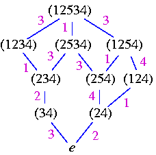
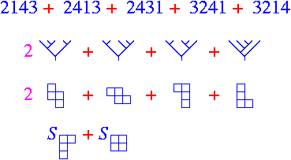

| |
Banff International Research StationWorkshop on Combinatorial Hopf Algebras
|
|  |  |
Recent foundational work has uncovered new connections between active communities within the diverse subjects of combinatorics, algebra, geometry, and theoretical physics. This has created an new and vibrant subject of Combinatorial Hopf Algebras. A small weekend AMS/CMS meeting in Montréal in May 2002 in this subject was the first time that some of these people had met to exchange ideas. There, a consensus emerged that workshop at which participants could interact over a longer period would be crucial for the further development of this emerging subject. This workshop is a response to that need.
Combinatorial Hopf Algebras has its origins in an observation of Rota that many combinatorial objects possess natural product and coproduct structures. Enumeration and classification of these structures often gives rise to an associated graded Hopf algebra. Many of these Hopf algebras of combinatorial objects (combinatorial Hopf algebras) possess important structures. For example, Connes and Kreimer show that a Hopf algebra of rooted trees encodes renormalization in quantum field theory. Loday and Ronco show a Hopf algebra of planar binary trees has interesting operadic structure (it is free dendriform on one generator). Other combinatorial Hopf algebras such as the algebras of symmetric and quasi-symmetric functions are central to algebraic combinatorics.
Exciting discoveries of Ehrenborg and others show that many interesting enumerative combinatorial invariants of combinatorial objects induce a Hopf morphism from the corresponding combinatorial Hopf algebra to the Hopf algebra Qsym of quasi-symmetric functions. Aguiar conceptualized and extended this discovery, showing these morphisms arise from a universal property of the Hopf algebra Qsym as a terminal object in the category of graded Hopf algebras equipped with a zeta-function. This foundational work shows that many enumerative combinatorial invariants (among them flag f-vectors of polytopes, Littlewood-Richardson coefficients in geometry and representation theory, and chromatic symmetric polynomials) are obtained from this universal property. In light of this, the Hopf algebra Qsym, its sub-structures, and those of other combinatorial Hopf algebras play an increasingly important role in algebraic combinatorics.